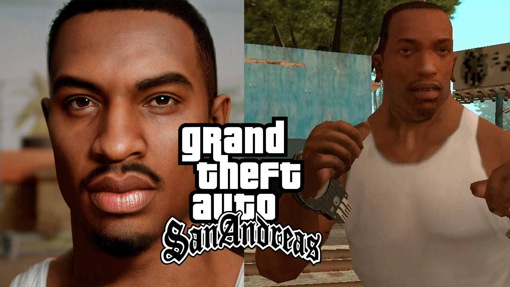
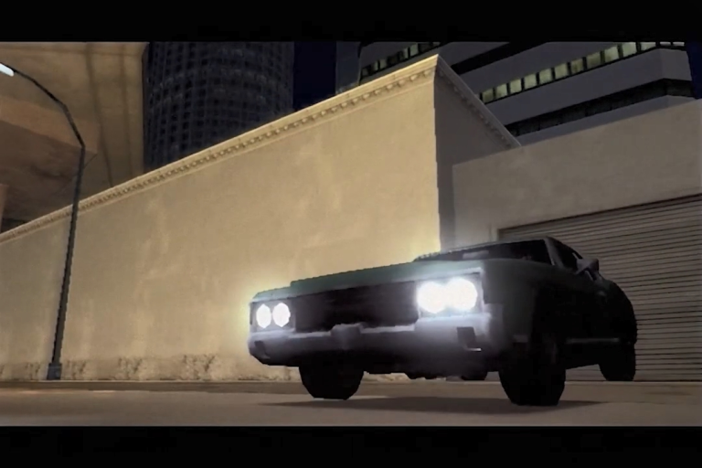

O Gta SanAndreas é sem dúvida o jogo mais histórico e nostalgico da franquia, pois ele teve a história mais envolvente e que fazia com o jogador querer a continuar a jogar para zerar e descobrir quem traiu o CJ(carl Johnson, personagem principal).

A história do jogo começa com o CJ voltando para a cidade de Los Santos e indo conhecer sua gangue. No filme introdutório do jogo tem uma parte em que cita sua mãe morta, apesar de ser explicado brevemente sobre na missão
Drive-Thru. No filme introdutório, conta exatamente como aconteceu a tragédia. A gangue dos Ballas sempre foi inimiga da Grove e vendo como estavam perdendo forças, visto a morte de Brian e a fuga de CJ, aproveitaram para planejar algo.

A história gira em torno de Carl Johnson (CJ) e a sua gangue Grove Street Famillies, que já foi uma das gangues mais poderosas da cidade, mas perdeu força para a gangue rival, os Ballas. CJ tenta recuperar sua honra, ajudando sua antiga gangue a se reerguer, ao lado de seu irmão Sweet e seus amigos Ryder e Big Smoke. Toda essa trama é inspirada em uma rixa real, entre duas das maiores gangues dos Estados Unidos, os Bloods e os Crips. Se você é ligado no mundo do rap, provavelmente conhece alguns rappers famosos ligados á essas gangues, como Tupac Shakur e Snoop Doog.
| Nomes Importantes | Carl Johnson | Oficial Frank Tempenny | T-Bone Mendez |
|---|---|---|---|
| Claude | Oficial Eddie Pulaski | Oficial Jimmy Hernandez | |
| Catalina | Big Smoke | Ryder | |
| The Truth | Cesar Vialpando | Sweet Johnson | |
| Wu Zi Mu | Madd Dogg | Old Reece | |
| Og Loc | B-Dup | Kendl Johnson |